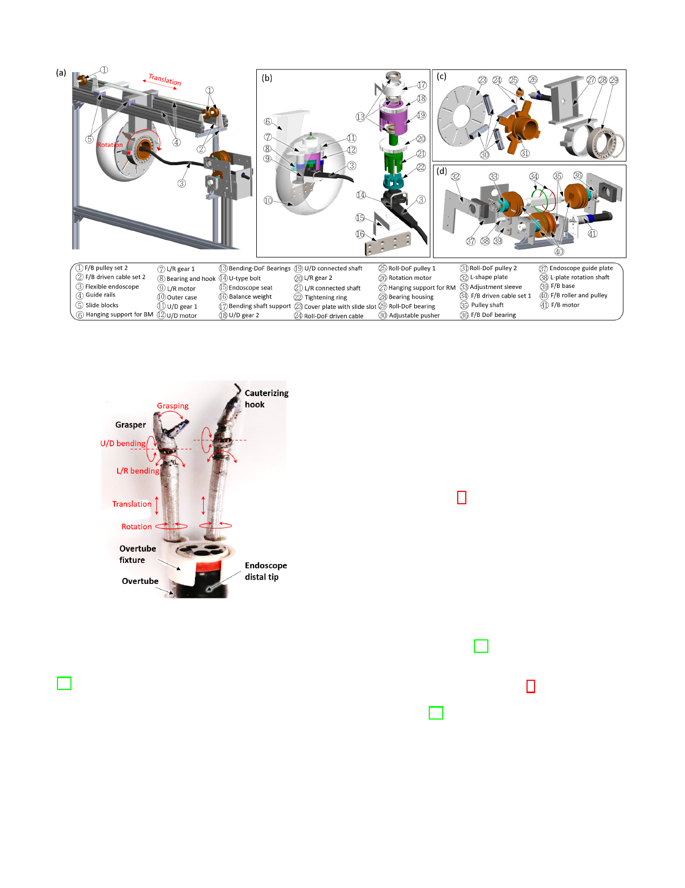

4
Fig. 3. Robotic endoscope system in (a) perspective view. Exposed view of (b) bending module (BM), (c) rotation module (RM) and (d) translation module
(TM).
workspace with a cross-sectional diameter of 25 mm. The en-
doscope has a larger workspace with a cross-sectional diameter
of 160 mm which can significantly increase the workspace of
the instruments.
Fig. 4. Robotic instruments of grasper (left) and monopolar cauterizing hook
(right).
by two antagonistical tendon-sheath mechanisms and motors
[26]. At the proximal end, pretension is applied to each tendon
to maintain the tension and reduce the effect of backlash and
slacking. Load cells are applied to record the proximal tension
force for every tendon. The translation and rotation DoFs are
actuated by a motorized linear slider and a rotary motor at
the proximal side, respectively. The robotic instruments are
attached to the endoscope by passing through the overtubes,
which are fixed on the endoscope.
In the initial position, the instruments extend out about
60mm from the tip of the endoscope. They can be withdrawn
for maximum 40 mm. Each bending joint can rotate [-
83◦, 83◦]. Each of the delicate surgical arms has a cylindrical
C. Master Interface
1) Hand interface: Two Omega 7 haptic interfaces from
Force Dimension (Fig. 5a) are used to control the robotic
instruments. Each such interface can provide control of six-
DoF movements and one-DoF grasping. Four DoFs of hand
motions are selected to match the control of the slave tool.
During the operation, the operator holds the handle and move
it. The thumb and index finger can control the gripper. The
translations of hands in xh, yh, zh and rotation in γh are
mapped to the positions of the in/out translation, L/R bending,
U/D bending and the velocity of the rotation-DoF of the
flexible instruments respectively.
2) Foot interface: A foot interface was specially designed
to control the endoscope [27]. It is a hybrid parallel-serial
structure consisting of a base, a mobile plate, a pedal with
adjustable foot fixture and eight sets of serial elastic sensing
modules of springs and load cells (Fig. 5b). The foot interface
has been evaluated in a teleoperation system controlling an
industrial robot [28]. The forces applied by the operator’s
foot is transmitted through springs and recorded by the force
sensors. The set of multiple springs provide haptic feedback of
the position without needing visual check. When the operator
finishes operation movements and releases the pedal, the
interface returns to the home position automatically, providing
a positioning assistance and a resting posture for the foot. The
rotations of foot in θf , φf and translations in xf , yf control
the velocity of the robotic endoscope in L/R, U/D bending,
roll and in/out DoFs, respectively.